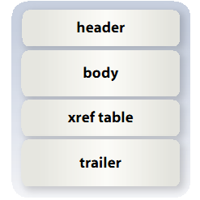
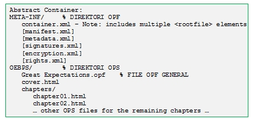
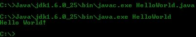
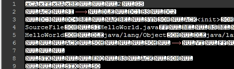
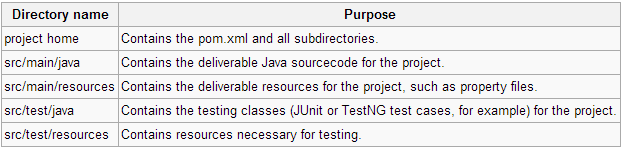
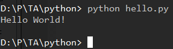

Oleh Panjie Setiawan Wicaksono / 13207064
Perkembangan Teknologi Informasi
Konten Digital (Buku, dsb)
Tersebar + Belum Ada Integrasi Penuh
Sistem Akses Buku Digital
Akses perpustakaan digital
+
Membaca buku digital
+
Backup data di cloud
ITBookReader
Perangkat bergerak Android
Target pengguna: semua kalangan
Penentuan Topik
Riset Permasalahan
Perancangan Sistem
Kajian Pustaka Literatur + Program
Implementasi
Definisi
Bentuk publikasi konten buku
Kata-kata + gambar + konten lain
Media atau perangkat elektronik
Keunggulan
Ramah lingkungan
Fleksibilitas akses
Variasi konten
Efisien
Portable Document Format
Adobe Systems
PostScript + Sistem Embed + Sistem Enkapsulasi
%!PS
/Courier % name the desired font
20 selectfont % choose the size in points and establish
% the font as the current one
72 500 moveto % position the current point at
% coordinates 72, 500 (the origin is at the
% lower-left corner of the page)
(Hello world!) show % stroke the text in parentheses
showpage % print all on the page

Header: Informasi versi PDF
Body: Informasi obyek
Xref table: Penunjuk + identifikasi obyek
Trailer: Akhir dokumen
Electronic Publication
IDPF - International Digital Publishing Forum
File kompresi ZIP
Konten dalam file markup (X)HTML
OCF - Open Container Format
Enkapsulasi dokumen-dokumen penyusun epub
ZIP - Sistem file virtual
Folder META-INF {file 'container.xml'}
OPS - Open Publication Structure
Dokumen isi buku
.html atau .xhtml {text, gambar, css}
OPF - Open Packaging Format
File .opf
Lokasi dicantumkan pada 'container.xml'
Metadata, daftar isi, identifikasi buku

Object Oriented Programming
WORA - Write Once Run Anywhere
Java Virtual Machine
.java kompilasi .class (bytecode) eksekusi
low level: Java C/C++
class & object
JRE - Java Runtime Environment (7u21)
JDK - Java Development Kit (7u21)
HelloWorld.java:
class
{
public static void main(string[] args)
{
System.out.println("Hello World!");
}
}
Kompilasi + Eksekusi:

HelloWorld.class:

Memudahkan proses build
Sistem build yg seragam
Informasi kualitas proyek
Kerangka dan standar
Logika update pustaka
pom.xml:
4.0.0
com.mycompany.app
my-app
1.0
junit
junit
3.8.1
test
Struktur proyek Maven:

Multi-paradigm
Filosofi: mudah dibaca programmer
Interpreter
Python Interpreter (2.7.3)
Pustaka Standar Python
Pustaka Dependensi Lain
hello.py:
print "Hello World!"
eksekusi:
